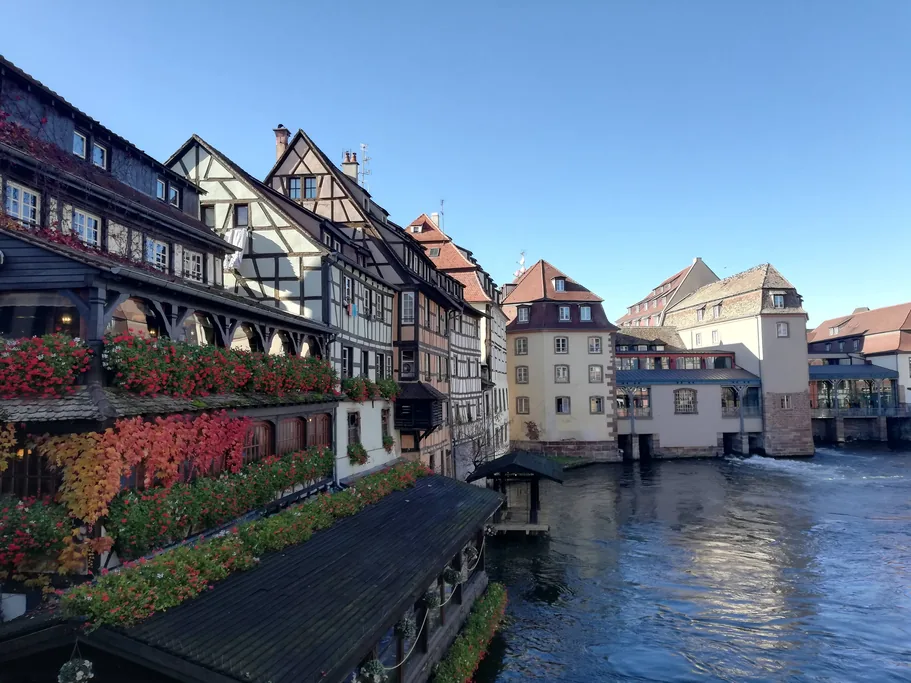
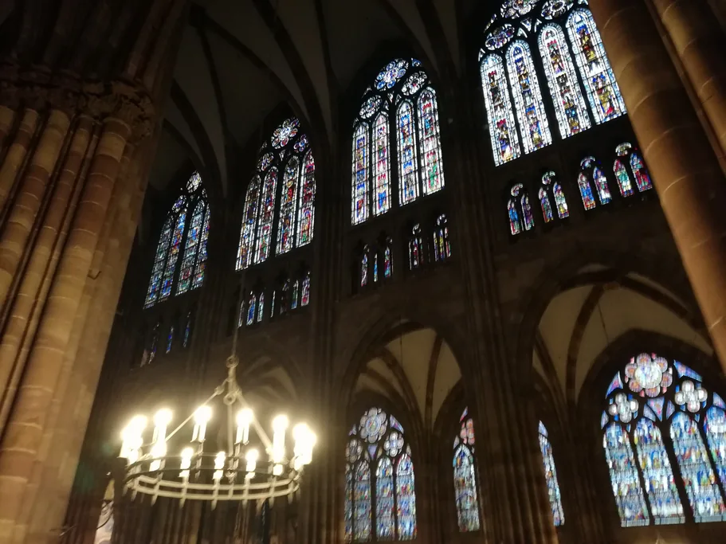
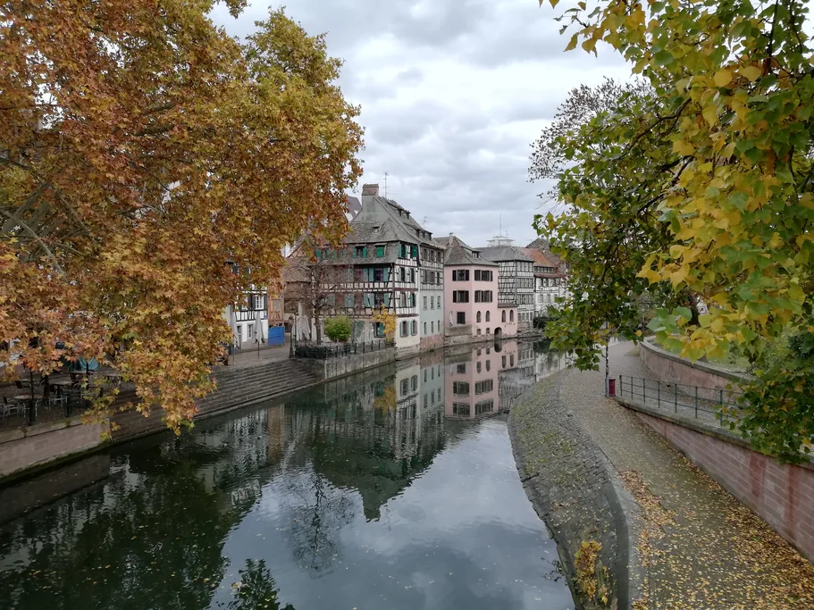
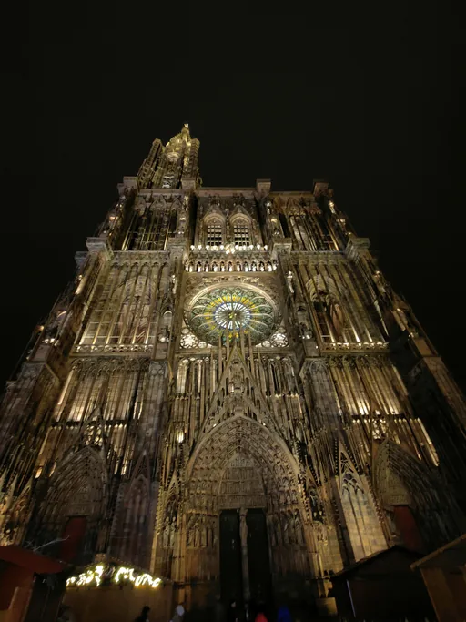

Ainda está a planear a viagem toda? Comece pelo nosso guia completo de Estrasburgo e volte aqui para os pormenores do dia.
A maioria dos roteiros de um dia é uma lista de sítios sem horas. Aqui isso não serve. O interior mais fotografado da cidade fecha noventa minutos a meio do dia, a torre não tem qualquer sistema de reservas e, no verão, os bilhetes de barco esgotam à hora de almoço. O relógio decide tudo — e por isso este dia segue o traçado do audioguia da TouringBee por Estrasburgo, ao seu ritmo. Esse percurso começa no Pont Kuss, a cinco minutos da estação, e acaba na catedral. Chegue, caminhe, esteja debaixo da flecha a tempo do relógio.
A escala ajuda. A Grande Île — a ilha que o Ill abraça e o primeiro centro urbano inteiro a entrar na lista da UNESCO, em vez de um só monumento — mede cerca de um quilómetro. Quinze minutos para a atravessar. Nada do que se segue exige táxi, autocarro ou elétrico, e o piso é plano.
Num relance
- Grande Île — cerca de 1 km de ponta a ponta; o dia inteiro dá uns 6–7 km a pé
- Nave da catedral — grátis. Seg.–sáb. 08:30–11:15 e 12:45–17:45. Dom. e dias santos só 14:00–17:15
- Relógio astronómico — filme a partir das 12:00, apóstolos às 12:30. €3 adulto / €2 reduzido. Entrada a partir das 11:30, porta Saint-Michel. Só no próprio dia
- Subida à plataforma — 330 degraus até aos 66 m. €10 adulto / €6 reduzido. Venda só no local, sem sistema de filas
- Barco da Batorama — Circuit Rouge 1 h 10, €16,20 adulto. Bilhetes com hora marcada. Compre de manhã
- Museus — €7,50 cada, passe de 1 dia €16. Fecham à segunda-feira. O Musée Alsacien está fechado até 1 de junho de 2028
- Paris → Estrasburgo — comboios de alta velocidade diretos, o mais rápido em 1 h 45
- Strasbourg City Card — €5 pela Internet. É um cartão de descontos, não um passe, mas paga-se logo na primeira visita
O que decide o seu dia: as 12:30
O relógio astronómico fica no transepto sul. O espetáculo completo — os apóstolos em desfile, o galo a cantar as negações de Pedro, os carros dos deuses antigos a rolar — acontece uma vez por dia, às 12:30, quando o meio-dia astronómico chega ao mostrador. Antes disso, às 12:00, passa um filme. Para o público se juntar, a catedral fecha a nave a toda a gente das 11:15 às 12:45.
Este dado muda a forma de organizar um dia. Conte entrar por volta do meio-dia e encontra portas fechadas e uma multidão satisfeita consigo mesma em fila noutra entrada.
Essa entrada é a Saint-Michel, junto à Place du Château, aberta a partir das 11:30. Os bilhetes custam €3 adulto, €2 reduzido, grátis até aos 6 anos — vendem-se nas lojas da catedral até às 11:00 e depois à porta. Não há reserva antecipada, em lado nenhum, para ninguém. Um site que ofereça um «bilhete sem fila para o relógio astronómico» está a vender uma coisa que não existe. Não há espetáculo aos domingos nem nos feriados religiosos com missa das 11:00, dias em que o acesso é livre depois dessa missa; ao domingo, a própria nave só abre às 14:00.
A plataforma é a armadilha oposta. Sem hora marcada, sem reserva, sem sistema de filas — sobe quando chega, e toda a gente faz o mesmo. A fila depende apenas da hora. Vá logo à abertura ou nas duas últimas horas do dia. Nunca às 15:00 de um sábado de julho.
Não se reserva de todo: o espetáculo do relógio das 12:30 e a subida à plataforma. Vendem-se os dois no local, no próprio dia.
Reserve logo de manhã: a Batorama. Os bilhetes têm hora marcada e os horários esgotam com horas de antecedência.
Vale os cinco euros: o Strasbourg City Card, no posto de turismo da Place de la Cathédrale. €5 pela Internet, €6 ao balcão, válido 7 dias: menos €4 na plataforma, €4 por museu, €3,14 na Batorama. Os extras com guia estão entre as visitas e cruzeiros em Estrasburgo.
08:30 — Sair do comboio e chegar ao Pont Kuss
Deixe a mala no depósito de bagagens da estação, saia de baixo da bolha de vidro que cobre a gare de 1883 e siga para leste pela Rue du Maire Kuss. Cinco minutos depois está no Pont Kuss, sobre o Ill, onde começa o percurso áudio.
Comece a andar de imediato. O erro clássico é um café demorado às 09:00 — às 16:00 vai querer essa hora de volta. Tome-o antes num banco de Petite France.
09:00 — Grande Rue, a rua mais antiga da cidade
Dez minutos a pé levam-no à Grande Rue, traçada no século V sobre uma via militar romana e hoje ladeada por casas do século XVI ao XIX. Em Saint-Pierre-le-Vieux, uma igreja protestante e uma católica partilham o mesmo telhado, cada uma com a sua porta.
Aprenda o truque das traves de madeira antes de fotografar duzentos exemplos. O imposto medieval sobre a propriedade calculava-se pela área ocupada ao nível do chão. Por isso os construtores empurravam cada andar mais para cima da rua e pagavam imposto pela fatia mais pequena da casa. Cada fachada saliente desta cidade é uma fuga ao fisco com 500 anos.
09:45 — Petite France e a melhor vista gratuita de Estrasburgo

Atravesse o Pont du Faisan — uma ponte giratória que roda, dizem, como o faisão no seu ritual de acasalamento — e está em Petite France, a quinze minutos da Grande Rue.
O nome não tem nada de romântico. No final do século XV havia aqui um hospício para soldados com sífilis, aquilo a que a Estrasburgo de língua alemã chamava «a doença francesa». Antes dos turistas, este era o bairro dos curtidores, dos moleiros e dos pescadores, e aqueles sótãos abertos não foram feitos para a vista. Era ali que se secavam as peles.
Continue para oeste até aos Ponts Couverts, quatro torres do século XIII que sobraram de uma muralha que teve noventa. Chamam-se pontes cobertas porque há seis séculos tinham telhados de madeira. Os telhados desapareceram. O nome ficou.
Depois suba ao Barrage Vauban, mesmo em frente. Concluído em 1688, era uma arma: fecham-se as comportas, o Ill sobe e inunda a planície a sul, o que deixa a artilharia inútil. Funcionou uma vez, em 1870. No cimo das escadas há um terraço, gratuito, com os Ponts Couverts em primeiro plano e a flecha da catedral atrás. A única vista melhor da cidade custa €10 e 330 degraus.
Saia até às 10:45.
11:15 — Atravessar a ilha até à catedral
Do terraço do Vauban à Place de la Cathédrale vai cerca de um quilómetro, vinte e cinco minutos se parar — e vai parar. Passa pela igreja de Saint-Thomas, onde o marechal Maurício de Saxe desce para o seu próprio túmulo de mármore branco, de cabeça erguida, com um leopardo britânico e uma águia austríaca a tombar-lhe aos pés; depois pela Place Gutenberg, rebatizada em 1840 em honra do homem que passou aqui uma década a inventar os tipos móveis antes de os levar para Mogúncia.
Vire para a Rue Mercière. A catedral fecha o fundo da rua como um cenário de teatro. É esta a fotografia. Depois vá direito à entrada Saint-Michel e compre o bilhete de €3. Portas a partir das 11:30.
12:30 — Os apóstolos e depois a nave só para si

Olhe para cima antes do espetáculo. Os vitrais medievais daqui só perdem, em França, para os de Chartres, e sobreviveram à guerra dentro de caixotes de madeira — alguns levados pelos alemães e escondidos em minas de sal austríacas, mais tarde encontrados por soldados americanos que leram os rótulos e os enviaram de volta.
Às 12:00 passa o filme. Às 12:30 a máquina acorda: um anjo toca o sino, outro vira a ampulheta, as idades do homem desfilam diante da Morte, Cristo faz a Morte recuar, os apóstolos ajoelham-se, o galo canta três vezes.
Depois vem a recompensa de que ninguém fala. Às 12:45 a nave reabre a todos — e você já está lá dentro enquanto o resto da cidade ainda vem a caminho. Vinte minutos de silêncio sob abóbadas de 32 metros.
À saída pela porta oeste, olhe outra vez para cima. 142 metros, uma só flecha, terminada por Johann Hültz em 1439. A torre sul nunca foi construída. Entre 1647 e 1874 nada no mundo foi mais alto.
13:15 — Almoço e o aviso da Batorama

Cruzeiro no Ill em Estrasburgo Hora marcada
Faça por esta ordem: primeiro compre o bilhete do barco, depois vá comer.
O Circuit Rouge da Batorama dá 1 h 10 à volta da Grande Île, passa pelas eclusas e chega ao bairro europeu — €16,20 adulto, €14,70 dos 13 aos 17, €8,90 dos 4 aos 12. Embarque no Embarcadère Cathédrale, só no pontão A; o B e o C estão fora de serviço em 2026 — ou no Quai au Sable, a cem metros. Os bilhetes têm hora marcada. Uma viajante quase perdeu o comboio porque o horário livre seguinte era duas horas depois. Compre agora para uma partida à tarde e vá comer.
O caminho mais curto é voltar à Rue des Moulins, em Petite France, onde quase todas as portas são de restaurantes. Ou fique junto à catedral e coma dentro da casa Kammerzell — 1427 na estrutura, 1589 na fachada esculpida, setenta e cinco janelas e salas com frescos.
Peça o que é da região. Tarte flambée: massa fininha, fromage blanc, cebola e toucinho, num forno muito quente. Baeckeoffe: três carnes marinadas em camadas com batata, num pote de barro selado, chamado «o forno do padeiro» porque as famílias o deixavam na padaria a caminho da missa de domingo. Beba Riesling ou Pinot Gris — na Alsácia os vinhos têm o nome da casta, não o da aldeia.
14:30 — Palácios, museus e a metade lenta da ilha
Este é o bloco flexível. Três opções, e vai conseguir uma e meia.
O Palais Rohan, o palácio episcopal do século XVIII onde dormiram Luís XV, Maria Antonieta e Napoleão, reúne três museus — Belas-Artes, Artes Decorativas e Arqueologia — a €7,50 cada, ou o passe de dia a €16, que compensa a partir de dois. Tudo o que é municipal fecha à segunda-feira, é gratuito para todos no primeiro domingo do mês, sempre gratuito até aos 18 anos, e vende-se só na bilheteira.
Do outro lado da água, o Museu Histórico ocupa o matadouro renascentista de 1588 e guarda as maquetas que tornam a ilha inteira legível. O Musée Alsacien está fechado para obras até 1 de junho de 2028 — não vá lá.
Não gosta de museus? Faça antes a volta calma: o Pont du Corbeau, de onde os condenados eram descidos ao rio em gaiolas de vime, e a Place du Marché-aux-Cochons-de-Lait, com o seu cata-vento em forma de sapato.
16:30 — 330 degraus ou uma hora no rio

Audioguia de Estrasburgo ao seu ritmo Acesso imediato

Agora a plataforma. A fila diminuiu e o arenito rosa dos Vosgos aquece de cor à medida que o sol desce — essa cor é óxido de ferro na pedra.
330 degraus, sem elevador, 66 metros de subida, €10 adulto e €6 reduzido. De 1 de abril a 30 de setembro, 09:30–13:00 e 13:30–20:00, última subida às 19:15. De 1 de outubro a 31 de março, 10:00–13:00 e 13:30–18:00, última subida às 17:15. Atenção à pausa do meio-dia: a torre fecha das 13:00 às 13:30 durante todo o ano. Encerra a 1 de janeiro, 1 de maio e 25 de dezembro.
Se os joelhos votarem contra, é agora que parte o barco que reservou à hora de almoço.
18:30 — Para oeste pela ilha e depois o jantar
Aproveite a última luz. A Place Kléber é a maior praça da cidade e recebe a árvore de Natal. A Place Broglie é na verdade uma avenida, e foi ali que a Marselhesa se cantou pela primeira vez, em 1792. Atravesse o Pont des Juifs até à Place de la République, onde um monumento de 1936 mostra uma mãe de Estrasburgo com dois filhos a morrer — um que combateu pela França, outro pela Alemanha, à procura da mão um do outro. A inscrição diz apenas «Aos nossos mortos». Não nomeia nenhum país. Numa cidade que mudou de mãos em 1681, 1871, 1918, 1940 e 1944, nada mais teria sido aceite.
Depois volte a Petite France para jantar numa winstub — toalhas de xadrez, vinho em copos de pé verde vivo, um formato inventado pelos produtores para venderem o seu excedente com comida de casa.
Duas variantes: o primeiro TGV de Paris e um dia de chuva
Se vier de Paris nessa manhã. Os comboios de alta velocidade diretos partem da Gare de l'Est; o mais rápido faz os 440 km em 1 h 45 — veja horários e preços aqui. O preço varia muito com a data: com antecedência pode ficar abaixo de €30, perto do dia sobe bastante. Na primeira partida rápida chega ao Pont Kuss por volta das 09:30 em vez das 08:30. Tire essa hora à tarde, não à manhã: encurte Petite France, mantenha a entrada do relógio às 11:30 tal como está escrito, fique por um museu e troque a torre pelo barco se tiver comboio de regresso à noite. A estação fica a dez minutos a pé de Petite France, por isso sair da ilha às 20:30 ainda dá para uma partida às 20:45.
Se chover. Quase tudo o que interessa tem telhado. Faça o relógio às 12:30 como planeado, fique na nave até às 13:30, coma sob as vigas do Kammerzell, depois percorra os três museus do Palais Rohan com o passe de dia de €16 e acabe no Museu Histórico. Toda a tarde a coberto. Os barcos da Batorama são cobertos e navegam todo o ano, por isso o Circuit Bleu de 45 minutos, a €12,50, é mais uma hora ao seco. Deixe a plataforma de lado — 330 degraus molhados para ver nuvens não diverte ninguém.
O audioguia
O City Tour of Strasbourg da TouringBee é um percurso áudio sem guia, na aplicação TouringBee, para iOS e Android. 33 paragens, cerca de 2,5 horas ao seu ritmo — perto de 90 minutos de áudio, com gravações de um a três minutos. Começa no Pont Kuss e acaba na catedral: o mesmo traçado do dia descrito acima.
Desde €9,99, um pagamento, um ano de acesso, sem mensalidades, e-mail de ativação em três a cinco minutos. Depois de descarregado funciona totalmente sem Internet. Oito idiomas: inglês, francês, alemão, espanhol, italiano, português, polaco e russo.
Como funciona o mapa: a aplicação mostra um mapa GPS sem Internet com a sua posição, para saber sempre onde fica a paragem seguinte. Não reproduz o áudio sozinha. É você que inicia a gravação ao chegar a cada paragem. É esse o objetivo — pare para almoçar e retome o percurso duas horas depois exatamente onde ficou.
«Uma forma maravilhosa de ver a cidade por conta própria… se quiser fazer um cruzeiro no rio, compre os bilhetes logo de manhã. Têm hora marcada.»
— Julia_P, GetYourGuide, agosto de 2025
Classificado com 5,0 em 7 avaliações verificadas no Viator e no GetYourGuide.
Quero o audioguia de Estrasburgo — desde €9,99
Pronto para caminhar?
Esteja no Pont Kuss às 08:30 e o resto do dia constrói-se sozinho.
Perguntas frequentes
Um dia chega para Estrasburgo?
Para a Grande Île, chega. O centro classificado pela UNESCO mede cerca de um quilómetro, por isso Petite France, os Ponts Couverts, a catedral e as praças principais cabem num dia a pé. Um dia não dá para juntar ainda o bairro europeu, uma volta pelos museus e uma ida a Colmar.
A que horas toca o relógio astronómico de Estrasburgo?
O espetáculo completo acontece uma vez por dia, às 12:30, com um filme a partir das 12:00. A entrada é pela porta Saint-Michel, junto à Place du Château, a partir das 11:30; os bilhetes custam €3 adulto e €2 reduzido. Não há espetáculo aos domingos nem nos feriados religiosos com missa das 11:00, dias em que o acesso é livre depois dessa missa.
Posso reservar com antecedência os bilhetes do relógio ou da torre?
Não. Vendem-se os dois no local, só no próprio dia. O bilhete de €3 para o relógio compra-se nas lojas da catedral até às 11:00 ou na porta Saint-Michel a partir das 11:30; o bilhete de €10 para a plataforma vende-se na torre. Não existe bilhete sem fila para nenhum deles, em operador nenhum.
A catedral de Estrasburgo fecha a meio do dia?
Fecha. A nave encerra das 11:15 às 12:45, de segunda a sábado, por causa do relógio astronómico. De resto a entrada é gratuita, das 08:30 às 11:15 e das 12:45 às 17:45. Aos domingos e dias santos abre apenas das 14:00 às 17:15 e pode fechar durante os ofícios.
É preciso reservar o passeio de barco da Batorama?
Reserve logo de manhã, no próprio dia da viagem. Os bilhetes têm hora de partida fixa e, na época alta, os horários esgotam com horas de antecedência. O Circuit Rouge dura 1 h 10 e custa €16,20 adulto. Embarque no Embarcadère Cathédrale, pontão A — os pontões B e C estão fora de serviço em 2026.
Dá para visitar Estrasburgo num dia a partir de Paris?
Dá. Há comboios de alta velocidade diretos da Gare de l'Est e o mais rápido demora 1 h 45. Apanhe o primeiro comboio rápido, ande cinco minutos da estação até ao Pont Kuss e ainda chega ao relógio das 12:30 sem pressa.
Qual é o pior dia da semana para uma visita de um dia?
Segunda-feira, quando todos os museus municipais fecham, e domingo, quando a nave só abre às 14:00 e o espetáculo do relógio pode não acontecer. De terça a sábado tem o roteiro completo.
Continue a explorar
- Guia completo de Estrasburgo — onde ficar, quando vir, quanto custa tudo
- Percurso a pé por Estrasburgo — o trajeto de 33 paragens, paragem a paragem
- Catedral de Estrasburgo — relógio, plataforma e horários num só sítio
- O que comer em Estrasburgo — tarte flambée, baeckeoffe e como funciona uma winstub
- Quantos dias em Estrasburgo? — se um dia começa a parecer pouco

O Eugene vive em França há 16 anos e trabalhou como guia turístico antes de fundar a rede de conteúdos de viagem paris10.travel. Escreveu o audioguia da TouringBee sobre Estrasburgo.
Todos os preços e horários desta página são verificados na fonte oficial do ano em curso. Quando um dado ainda não foi publicado, dizemos isso em vez de adivinhar.
Alguns dos links desta página são de afiliados (GetYourGuide, Booking.com, SNCF). Se reservar através deles, podemos receber uma pequena comissão, sem custo adicional para si. Isso nunca influencia o que recomendamos.